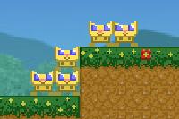

A game built live on Twitch from chat's suggestions! Help Rover the dog fight robots on the moon.
SSBU BingoA quick and dirty random bingo card for versus matches in Nintendo's Super Smash Bros. Ultimate.
Tool
SpinballMy take on an old arcade game called Cameltry. This was made with PlanckJS (a JavaScript port of the Box2d physics engine), and is my first time using a full physics engine.
Say WhenAnother Ludum Dare challenge! I tried something different this time and made a Game & Watch style toy. Technically not pixel art but still definitely "programmer art" :P
Pixel GenieA tool built to make quick pixel art for games. It handles creating color palettes and maintaining consistent light.
Tool
DepthCreated as an experiment in creating a 3d experience in a series of parallel 2d worlds. This was an optimization challenge wherein I learned a lot of the restrictions of HTML5 canvases.
Experiment
PokumA quick game I built while playing around with TypeScript. Though not much to look at, it gave me an opportunity to do some quick prototyping using the strong-typing.
Image GridA tool built to help my wife with some of her woodcrafting projects. This was one of my first stabs at a useful web app outside of work.
Tool
CSS Color CubeWhile flipping through the CSS titled colors, I noticed there were a ton of slight variants of white and started to wonder how the colors could be graphed out. I was exploring CSS animations at the time, and this was the result.
Experiment
Terrain GeneratorMy first stab at three.js. OpenGL and its similar libraries have always been unintuitive to me, but I managed to plug an old organic noise generator in to make this.
Experiment
 Zombie City
Zombie City
A small game thrown together in SGDK2, one of my favorite IDEs for making games. This was built from a friend's idea. It plays more like the old quarter-gobbling arcade games than I usually like, but it's still fun.
Shape DrifterThis was my first attempt at the Ludum Dare, a challenge to build a game in 24 hours from the provided theme. I didn't get as far with it as I had hoped, but I did manage to complete the base game in time.
 Gerbil TalesThis was one of my absolute favorites to build. I focused on building out a level editor upfront, so every game element had to be managed by other systems. It was a huge challenge in the loosely-typed world of pure JavaScript.
PixeliensOne of my first webgames, this was a personal challenge to complete in a month of evenings. It's perhaps one of the more polished games here despite being the first I built compeltely from scratch.
Runaway RabbitBuilt with the Scrolling Game Development Kit 2 over the course of 8 months. I kept a dev log chronicling the small challenges and victories along the way, which helped keep me going strong.
Download